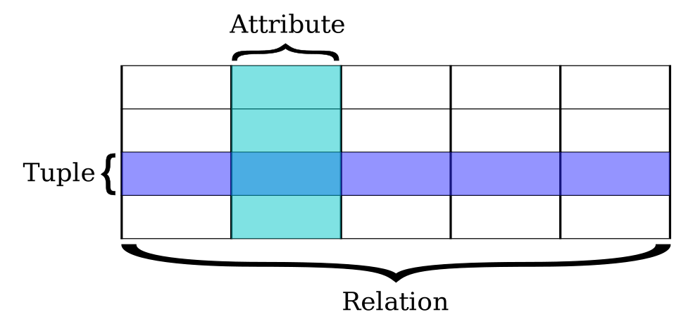

Catalog
关系型数据库存储结构化的数据。其中有一部分描述这些结构的“元数据”就被称为 Catalog。 在这个任务中我们将学习关系数据库的基本模型，为数据库定义好 Catalog 相关的数据结构，从而为后面插入数据做准备。
背景知识
数据库中包含了各种各样的对象。
表（Table）
我们最熟悉的对象是 表（Table），它是关系型数据库中存储数据的基本单位。
一张表可以理解为一个二维数组，它由纵向的列和横向的行组成。 每一列表示数据的某种属性（Attribute），每一行则表示一条数据记录（Record）。
例如下面展示了一个简单的记录学生信息的表：
| id | name | age |
|---|---|---|
| 1 | Alice | 18 |
| 2 | Bob | 19 |
| 3 | Eve | 17 |
在偏理论的语境下，表还有一个更正式的名字叫做 关系（Relation），因为它蕴含了数据属性之间的关系。 其中，每一行又被称为 元组（Tuple）。

表中的每一列都有自己的名字和类型。比如在上面的表中，第一列的名字是 id，数据类型是 INTEGER（整数）。而第二列的数据类型是 VARCHAR（字符串）。
各种数据库都会支持大量的数据类型，其中比较常见的有下面几种：
INTEGER：有符号整数DOUBLE：浮点数CHAR：定长字符串VARCHAR：变长字符串DECIMAL：十进制定点数，用来做无误差的精确运算（常用在交易系统中表示账户金额）DATE：日期和时间
部分类型还可以有自己的关联参数，例如：
CHAR(n)表示长度为n的字符串VARCHAR(n)表示最大长度为n的字符串DECIMAL(m, d)表示有效数字m位、小数点后d位的定点数。
表中每一列的数据都只能存储指定的类型，他们所有合法值的集合称为 数据域（Data Domain）。
在一般情况下，所有数据域都包含一个特殊的 空值 NULL。也就是说，表中的每个位置默认都可以为空。
除了名字和类型以外，每一列还有一些可选的属性：
-
非空
NOT NULL：表示这一列的值不能为NULL。 -
唯一
UNIQUE：表示这一列的值不能重复。 -
主键
PRIMARY KEY：主键能够唯一地表示表中的一行，一般用来作为索引。因此主键一定是唯一且非空的，并且每个表只能有一个主键。例如在上面的学生表中，
id就可以作为主键。
在 SQL 语言中，数据定义语言（Data Definition Language，DDL） 可以用来描述一个表的模式信息。 比如上面的学生表就可以通过以下语句来定义：
CREATE TABLE student (
id INTEGER PRIMARY KEY,
name VARCHAR NOT NULL,
age INTEGER
);
我们会在下一个任务中具体实现它：）
视图（View）
视图（View） 是一种虚拟的表，它表示一条 SQL 语句的查询结果。每次查看视图时，数据库都会执行一遍查询以获取最新的结果。
例如，我们可以用 DDL 创建一个关于学生名字的视图：
CREATE VIEW student_name AS
SELECT name FROM student;
类似地还有另一个概念叫做 物化视图（Materialized view）。它将查询结果缓存下来，并在特定时期进行更新。
索引（Index）
索引（Index） 是对数据库中某一列或多列数据进行排序的结构，用来快速查询表中的记录。
关系型数据库一般会对主键自动创建索引。如果还有其它的列需要大量随机访问或范围查询，就可以手动为它们创建索引来加速。 例如，我们可以用 DDL 创建学生名字的索引：
CREATE INDEX student_name ON student (name);
索引的经典实现是 B+ 树，这是一种适合存储在磁盘上的平衡树。
由于它的实现比较复杂，因此在 RisingLight 中我们暂时不会涉及索引。
模式（Schema）
模式（Schema） 是数据库对象的集合。上面提到的表、视图、索引等都可以被包含在一个 Schema 当中。 对于有用户权限的数据库系统，在 Schema 上可以指定不同的用户权限。
在 DDL 中我们可以先创建一个 Schema，然后在这个 Schema 内部创建其它对象：
CREATE SCHEMA school;
CREATE TABLE school.student (...);
部分数据库（比如 Postgres）在 Schema 之上还有一个层级 Database，一个 Database 可以包含多个 Schema。
不过其它大部分数据库都没有这个额外的层级：在 MySQL 中 DATABASE 和 SCHEMA 是同义词，在 SQLite 或 DuckDB 这类简单的嵌入式数据库中则不存在 DATABASE 这个关键词。
总的来看，一个数据库内部对象的层次结构可以表示成这样的一棵树：

当前任务的目标就是实现描述它的数据结构。
任务目标
实现 Catalog 相关数据结构，包括：Database，Schema，Table，Column 四个层级。
能够准确描述上面提到的这种表：
CREATE TABLE student (
id INTEGER PRIMARY KEY,
name VARCHAR NOT NULL,
age INTEGER
);
除此之外，这个任务没有新增的 SQL 测试。
整体设计
首先，我们提供一种可供参考的接口设计：
#![allow(unused)] fn main() { // 整个数据库的 Catalog 根节点 pub struct DatabaseCatalog {...} impl DatabaseCatalog { pub fn add_schema(&self, name: &str) -> SchemaId {...} pub fn get_schema(&self, id: SchemaId) -> Option<Arc<SchemaCatalog>> {...} pub fn del_schema(&self, id: SchemaId) {...} } // 一个 Schema 的 Catalog pub struct SchemaCatalog {...} impl SchemaCatalog { pub fn id(&self) -> SchemaId {...} pub fn name(&self) -> String {...} pub fn add_table(&self, name: &str, columns: &[(String, ColumnDesc)]) -> TableId {...} pub fn get_table(&self, id: TableId) -> Option<Arc<TableCatalog>> {...} pub fn del_table(&self, id: TableId) {...} } // 一个表的 Catalog pub struct TableCatalog {...} impl TableCatalog { pub fn id(&self) -> TableId {...} pub fn name(&self) -> String {...} pub fn get_column(&self, id: ColumnId) -> Option<Arc<ColumnCatalog>> {...} pub fn all_columns(&self) -> Vec<Arc<ColumnCatalog>> {...} } // 一个列的 Catalog pub struct ColumnCatalog {...} impl ColumnCatalog { pub fn id(&self) -> ColumnId {...} pub fn name(&self) -> String {...} pub fn desc(&self) -> ColumnDesc {...} } // 一个列的完整属性 pub struct ColumnDesc {...} impl ColumnDesc { pub fn is_nullable(&self) -> bool {...} pub fn is_primary(&self) -> bool {...} pub fn datatype(&self) -> DataType {...} } // 一个列的数据类型，包含了“可空”信息 pub struct DataType {...} impl DataType { pub fn is_nullable(&self) -> bool {...} pub fn kind(&self) -> DataTypeKind {...} } // 一个值的数据类型，不考虑空值 // 为了方便，我们可以直接使用 sqlparser 中定义的类型 pub use sqlparser::ast::DataType as DataTypeKind; }
为了代码结构清晰，可以把它们拆成多个文件：
src
├── catalog
│ ├── mod.rs
│ ├── database.rs
│ ├── schema.rs
│ ├── table.rs
│ └── column.rs
├── types.rs
...
由于 Catalog 会在数据库中多个地方被读取或修改，因此我们把它们设计为 可被共享访问 的数据结构（Send + Sync）。
这种 struct 的一个特点就是所有方法都标记 &self 而不是 &mut self，即使对于修改操作也不例外。
这种模式在 Rust 中被称为 内部可变性。
实现这种模式通常需要定义两层 struct：内层是普通的可变结构，然后在外面包一层锁。
以顶层的 DatabaseCatalog 为例：
#![allow(unused)] fn main() { use std::sync::Mutex; // 外部 Sync 结构 pub struct DatabaseCatalog { inner: Mutex<Inner>, // 对于读多写少的场景，也可以使用 RwLock } // 内部可变结构 struct Inner { schemas: HashMap<SchemaId, Arc<SchemaCatalog>>, // ... } }
当我们为外层结构实现方法的时候，需要先 lock 住内部结构，然后去访问 inner：
#![allow(unused)] fn main() { impl DatabaseCatalog { pub fn get_schema(&self, schema_id: SchemaId) -> Option<Arc<SchemaCatalog>> { let inner = self.inner.lock().unwrap(); inner.schemas.get(&schema_id).cloned() } } }
如果函数体过于复杂，也可以把它拆成多个 Inner 对象上的小函数：
#![allow(unused)] fn main() { impl DatabaseCatalog { pub fn add_schema(&self, name: &str) { let inner = self.inner.lock().unwrap(); let id = inner.next_id(); inner.add_schema(id, name); } } impl Inner { fn add_schema(&mut self, schema_id: SchemaId, name: &str) {...} fn next_id(&mut self) -> SchemaId {...} } }
主要的技巧就是这些，代码本身并不复杂。下一步我们就会基于这里定义的数据结构，来实现 CREATE TABLE 创建表操作了！